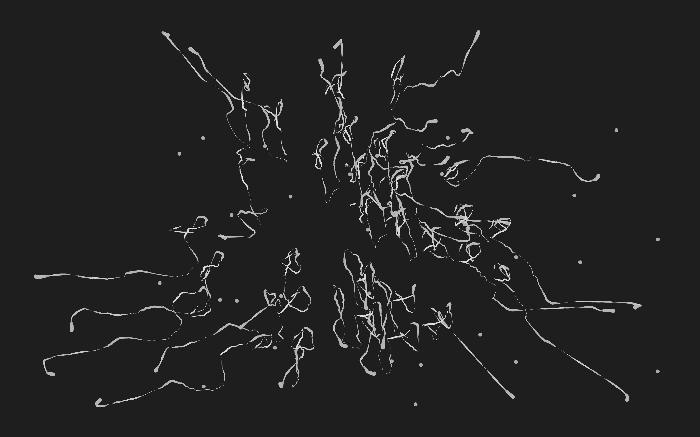
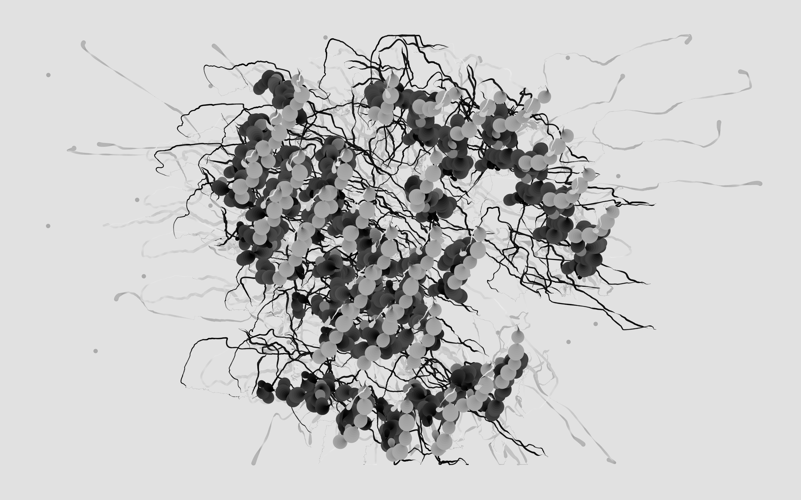
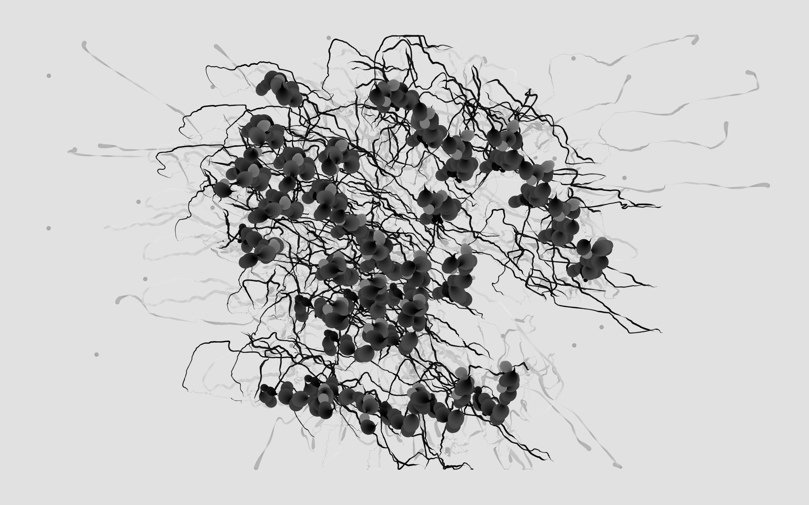
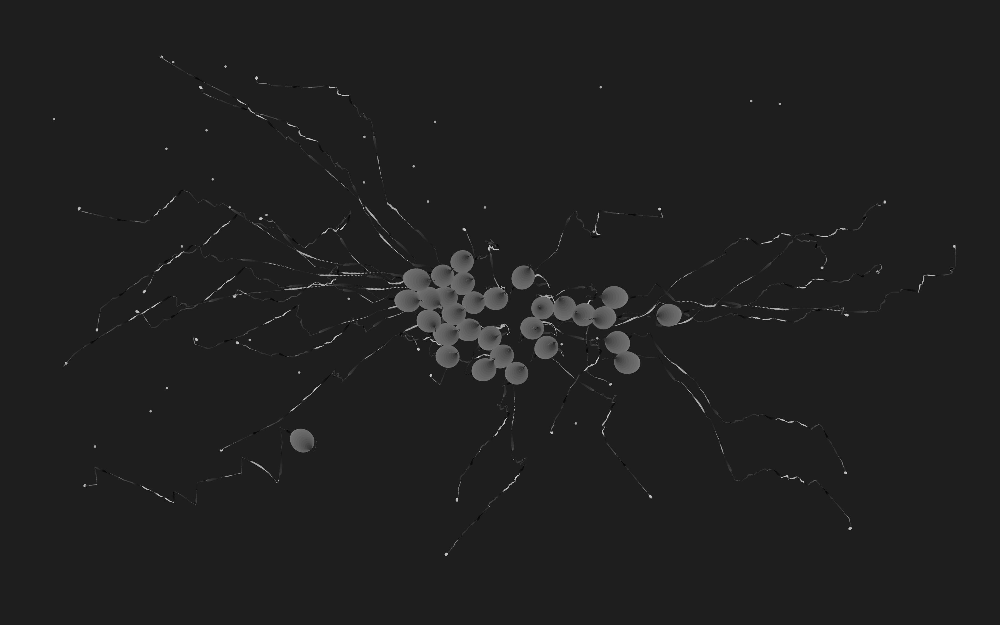

Projected visuals for a noise gig performed using no-input DIY instruments and feedback. The visual is built with P5.js and uses boids-based particle movement driven by real-time audio input. Microphone input is split into logarithmic frequency bands — bass scales the radius and overall size, low-mid adds slow rotation and drift, while mid and high frequencies add deterministic jitter and affect connection distance and line opacity.
Thousands of nodes are laid out in concentric layers using the golden angle for even angular spacing and connect by proximity to form geometric meshes. The boid-like behaviour creates organic, flocking motion that reacts to the intensity and texture of the sound. The result is a monochrome, mathematically driven visual that responds in real time to the noise performance.




Concept and code: Anant Rohmetra